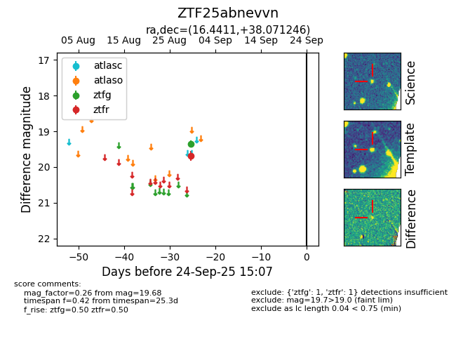

FINK: ZTF25abnevvn
Lasair: ZTF25abnevvn
ALeRCE: ZTF25abnevvn
ZTF25abnevvn (ztf,fink)
equatorial (ra, dec) = (16.4411,+38.07125)
galactic (l, b) = (126.0353,-24.71416)

last ztfg=19.36, ztfr=19.68
1 ztfg, 1 ztfr detections